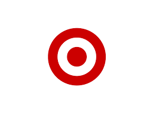
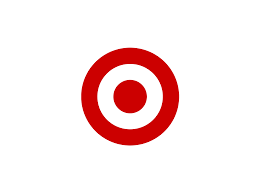
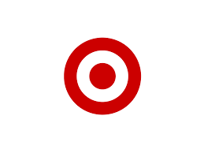

All the features of Slack work together so you can, too.

Stay on the same page and make decisions faster by bringing all of your work communication into one place.

Stay organized and focused with central spaces for conversations, files, tools and people.
Collaborate with teams at other companies the same way you do with teams at your own.
Messaging
Huddles and clips
Accessiblity
Spend less time shuffling tabs with a comprehensive message archive and all your work tools at your fingertips.
Slack supports collaboration at a global scale, with unlimited channels to mirror the way your company actually works.
“The thing that keeps us connected the most is Slack. It’s a very immediate and straightforward method of communication, and really the only channel that people prefer and enjoy using.”

learn more
Learn more
Learn more
Why should my company use Slack?
How can we use Slack effectively?
Is Slack secure?
Is Slack more secure than e-mail?
What is Slack Connect?